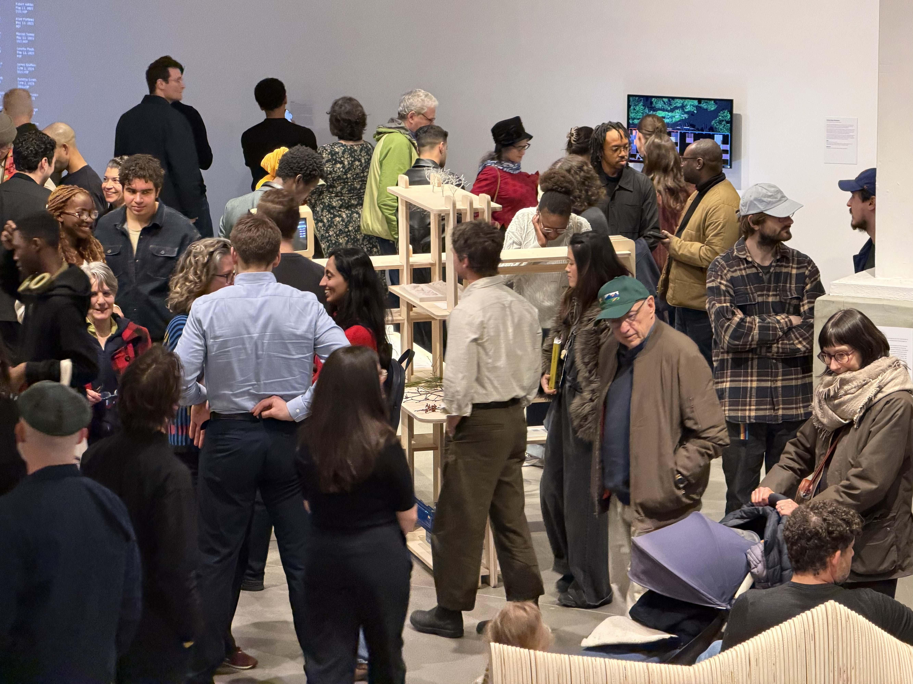
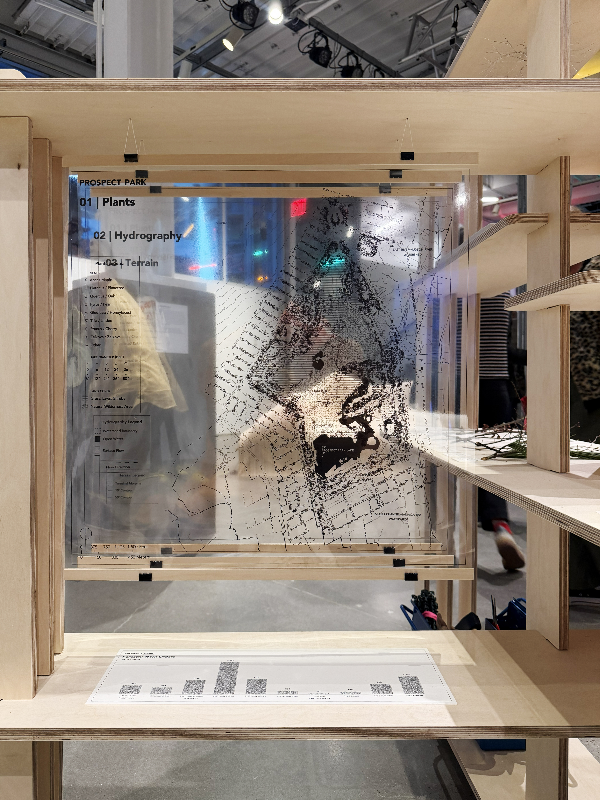
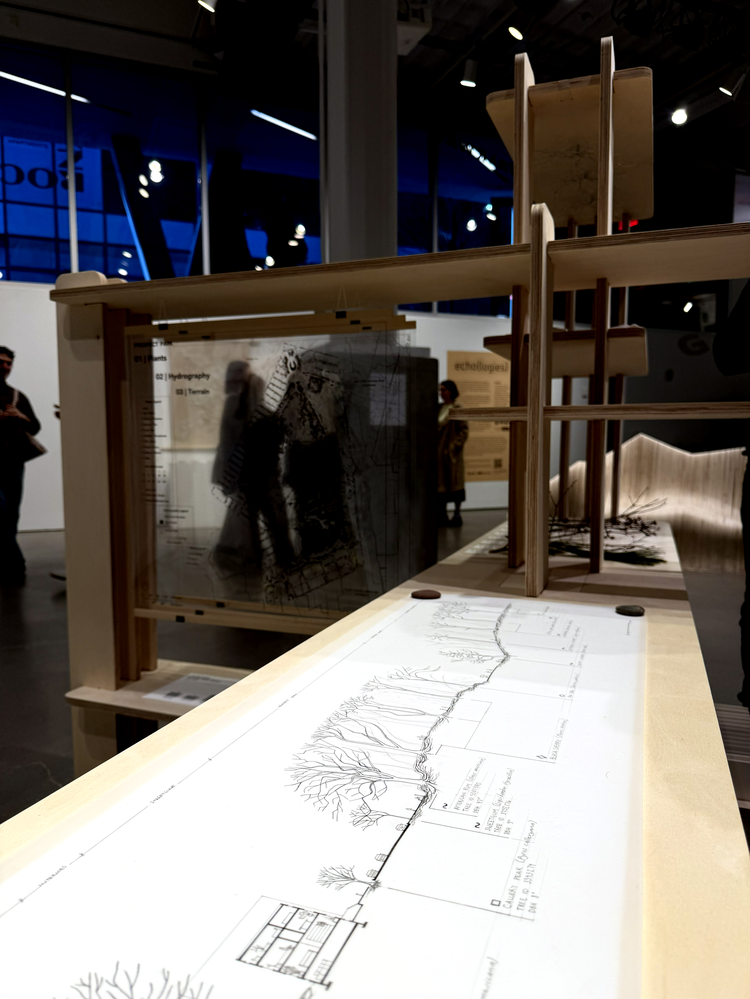

Every Tree NYC
[2026]
Every Tree NYC is an interactive software program that explores the over 1 million street
and park trees across New York City's five boroughs. Users select one of the city's 250+
neighborhoods to watch a short animation reordering the trees by attribtues such as
genus, health, and diameter.
Constructed as part of Landscape Workshop, Data Through Design Exhibition 2026.
On Display at BRIC House, Brooklyn, NY, March 21 - April 5, 2026.
-----
Collaborator: Mariel Collard Arias
Park Slope
Start screen







Stock and flow diagram representing dynamic resource behavior

Stock and flow diagram representing dynamic agent behavior